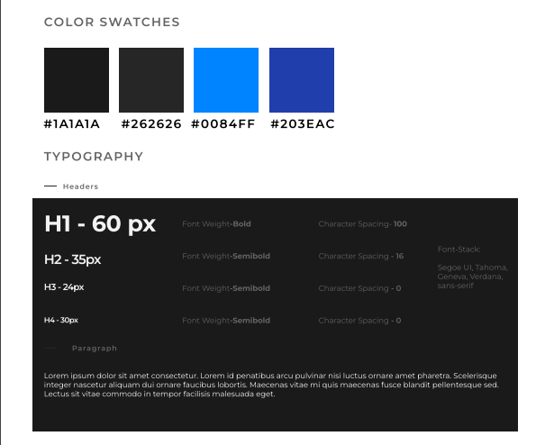
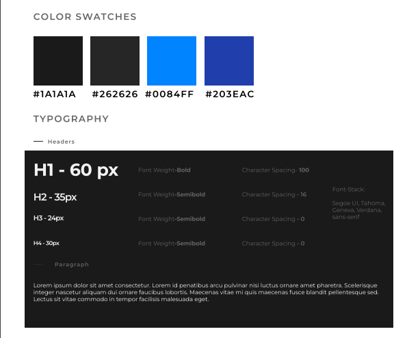

Voor de morsecodepuzzel heb ik voor Loki gekozen, een god die bekend staat om zijn liefde voor spelletjes.
Het leek mij toepasselijk om een spel tussen Loki en Hades te creëren, gezien hun kenmerkende eigenschappen en achtergronden.
Deze puzzel brengt elementen van speelsheid en mythologie samen, waarbij Loki's ondeugende aard in contrast staat met Hades, de god van de onderwereld.
Op deze manier wordt de morsecodepuzzel niet alleen een uitdaging maar ook een intrigerende ontmoeting tussen deze twee verschillende mythologische figuren.
Onze groep (en ikzelf) heeft voor deze kleuren gekozen omdat ze een gotische stijl uitstralen die goed past bij mythologie, aangezien het vaak wordt geassocieerd met iets duisters, angstaanjagends, en heidens.
De toevoeging van de blauwe kleur is doordacht, omdat deze een verfrissend element introduceert zonder te opvallend of schreeuwerig te zijn.
Bovendien hebben we voor deze fonts gekozen omdat ze er netjes uitzagen en goed bij het geheel pasten.
Ik heb besloten om de website als een enkele pagina (onepager) te ontwerpen.
Voor de tijdlijn-opdracht heb ik ervoor gezorgd dat alle opdrachten van boven naar beneden in de juiste volgorde worden weergegeven.